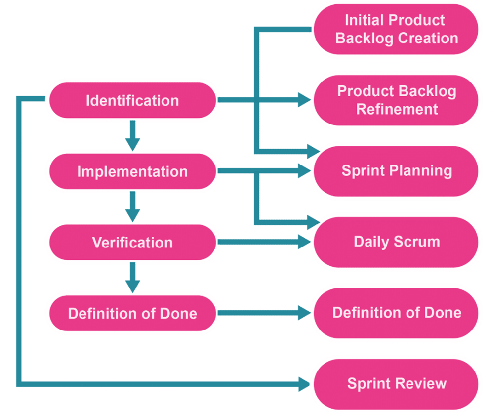
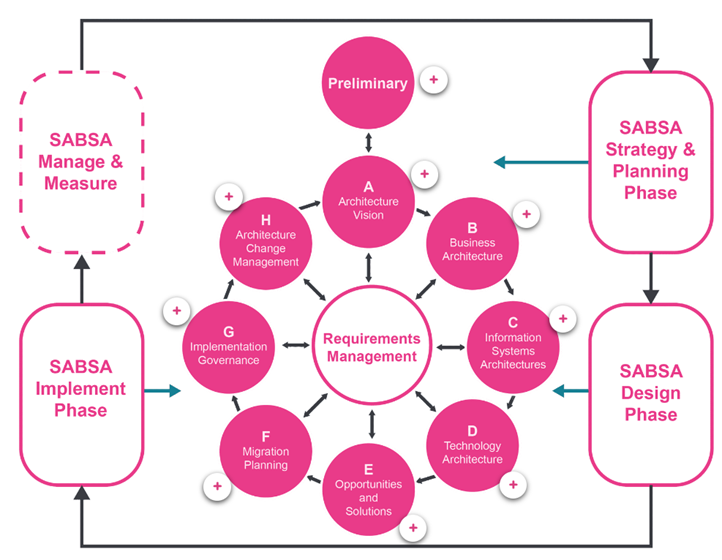

- Integrate project management methodologies to a software development project
- Become proficient in UML
- Discover what it means to be risk-aware
Unit 1: Introduction to Secure Software Development
- W3C
- ISOC
- NIST
- ISO/IEC
- IETD
- IEEE
- OMG
OWASP Top 10
- A01: Broken Access Control
- A02: Cryptographic Failures
- A03: Injection
- A04: Insecure Design
- A05: Security Misconfiguration
- A06: Vulnerable and Outdated Components
- A07: Identification and Authentication Failures
- A08: Software and Data Integrity Failures
- A09: Security Logging and Monitoring Failures
- A10: Server-Side Request Forgery
OWASP Top 10 Proactive Controls
- C1: Define security requirements
- C2: Leverage security frameworks and libraries
- C3: Secure database access
- C4: Encode and escape data
- C5: Validate all inputs
- C6: Implement digital identity
- C7: Enforce access controls
- C8: Protect data everywhere
- C9: Implement security logging and monitoring
- C10: Handle all errors and exceptions
Weaknesses identified by OWASP
- Broken Authentication
- Sensitive Data Exposure
- XML External Entities
- Broken Access Control
- Security Misconfiguration
- Cross-site Scripting
- Insecure Deserialization
- Using Components with Known Vulnerabilities
- Insufficient Logging and Monitoring
- Prioritise Individuals and interactions over processes and tools
- Prioritise working software over comprehensive documentation
- Prioritise customer collaboration over contract negotiation
- Prioritise responding to change over following a plan
- Scrum
- Paired Programming
- DSDM
- TDD

- Identify important security concerns
- Identify mechanisms to respond to these concerns
- Integrate security into each timeboxed sprint
- Create methods to test each security concern at the end of a sprint
- Test for security problems at the end of each sprint



- Use case diagram
- Sequence diagram
- Class diagram
- Activity diagram
- Object diagram
- Composite structure diagram
- State machine diagram
- Deployment diagram
- What information is represented in a use case diagram?
- What can change throughout the software development life cycle?
- True or False: OWASP is an acronym of Open Web Active Security Project?
User stories
Requirements
False
What is software architecture?
Software architecture is a description of the subsystems of components of a software system and the relationships between them.
Aspects of Software Architecture
- System
- Structure
- Environment
- Stakeholder
Type of Software Architects
- Technical architect
- Security architect
- Information architect
- Infrastructure architect
- Solution architect
- Enterprise architect
- System architect
Architectural quality attributes
- Modifiability
- Testability
- Scalability and performance
- Availability
- Security
- Deployability
- Confidentiality
- Integrity
- Availability
- Define areas of interest in the application (what parts are critical and need to be secured?)
- Analysis of software architecture
- Review of implementation details
- Verification of logic and syntax
- Whitebox/Unit testing
- Blackbox testing
- Identify important assets
- Decomposing the application into components
- Identifying and categorising threats to each asset or component
- Ranking the threats based on an establish risk model
- Developing threat mitigation strategies
- Overflow errors
- Unvalidated/Improperly validated inputs
- Improper access control
- Cryptography issues
- Information leaks
- Open port access
- Open access to a web server
- Open access to files, folders, and databases
- Race conditions
- System clock drifts
- Insecure file/folder operations
- Server-Side Template Injection
- Denial of Service Attack
- Cross-Site Scripting
- Use raw input instead of input for reading input
- Do type conversions and validation manually
- Add exception handling
- Don’t use eval or exec
- Don’t use pickle for serialisation use JSON or YAML
- Guard again integer overflows
- Use template strings for string formatting
- Use with when operating with files to ensure they are closed
- Validate sensitive information like passwords
- Avoid storing sensitive data local to functions
- Avoid race conditions and thread deadlock
- Keep your system up to date
- Validate input
- Keep it simple
- Principle of least privilege
- Sanitize data
- Authorize access
- Perform effective QA
- Practise defence in layers
- Define Security requirements
- Model threats
- Architect and design for security policies
- Adapter Pattern
- Observer Pattern
- Strategy Pattern
- Visitor Pattern
- Abstract Factory Pattern
- Template Pattern
- Singleton
Discussion Topic
Open source tools are available to create UML diagrams, some are listed below. This list is not exhaustive. The benefit of using such tools is that they ensure that the recognised UML components are used to represent the parts of the model correctly.
- Visual Paradigm
- Sequence Diagram
- Umbrello
Choose an open-source UML tool from the list above. Select one of the coding weaknesses which have been identified by OWASP and create a flowchart of the steps which may have led to the weakness occurring. Which UML models might you use to present the design of your proposed software, and why are they the most appropriate choice(s)?
What does OWASP do?
OWASP are an organisation that provide you with a checklist of best practices on how to improve software security.
OWASP 2021 Top 10 (OWASP, 2021)
- A01: Broken Access Control
- A02: Cryptographic Failures
- A03: Injection
- A04: Insecure Design
- A05: Security Misconfiguration
- A06: Vulnerable and Outdated Components
- A07: Identification and Authentication Failures
- A08: Software and Data Integrity Failures
- A09: Security Logging and Monitoring Failures
- A10: Server-Side Request Forgery
The OWASP Top 10 Proactive Controls (OWASP, 2018)
- C1: Define security requirements
- C2: Leverage security frameworks and libraries
- C3: Secure database access
- C4: Encode and escape data
- C5: Validate all inputs
- C6: Implement digital identity
- C7: Enforce access controls
- C8: Protect data everywhere
- C9: Implement security logging and monitoring
- C10: Handle all errors and exceptions
What I have selected from the OWASP Top 10
From the OWASP top 10 2021 I decided to focus on Injection because there lots of different types of injection ranging from command injection to SQL injection.
What is an injection attack?
IBM define injection attacks as a type of attack that allows an attacker to inject code into a program or query or inject malware onto a computer in order to execute remote commands that can read or modify a database, or change data on a web site. (IBM, N.D)
What is an SQL Injection attack?
IBM defines SQL Injection as an attack that takes advantage of the SQL syntax to inject commands that can read or modify a database, or compromise the meaning of the original SQL query. (IBM, N.D)
How to prevent injection attacks
The OWASP top 10 proactive controls suggests to escape data and validate all inputs in order to prevent all types of injection attacks (OWASP, 2018).
How to prevent SQL Injection attacks
OWASP suggests 4 different ways to defending against SQL injection option 1 is to use prepared statements, option 2 is to use properly constructed stored procedure, option 3 is to all list input validation and option 4 is to escape all user supplied input (OWASP, N.D).
What is a prepared statement?
Prepared statements are parameterized queries that force the developer to define all SQL code first and pass in each parameter to the query later.
Example of an SQL Injection query
SELECT * FROM Users WHERE UserId = 1 OR 1=1;
This query would return all rows for the user table as 1=1 is always true.
This table could contain confidential information such as the first name, last name and address information about all users for a particular service which a hacker could sell for financial gain or use to steal someone’s identity.
SQL Injection Flow chart

Creating a prepared statement in Python
import mysql.connector
try:
connection = mysql.connector.connect(host='localhost',
database='python_db',
user='admin',
password='root')
cursor = connection.cursor(prepared=True)
sql_update_query = "UPDATE Users SET Password = %s WHERE UserId = %s"
data_tuple = ('qwerty', 1)
cursor.execute(sql_update_query, data_tuple)
connection.commit()
print("User table updated using the prepared statement")
except mysql.connector.Error as error:
print("parameterized query failed {}".format(error))
finally:
if connection.is_connected():
cursor.close()
connection.close()
print("MySQL connection is closed")Types of SQL Injection attacks
The classic types of SQL injection attacks are Tautology based attacks, piggy-backed queries, logically incorrect attacks, union query, inference attack, stored procedure attack, blind injection, timing attacks, Compound SQL Injection attacks, Fast Flux SQL Injection attacks (P. Kumar and R. K. Pateriya, 2012)

Reference List
OWASP. (2021). OWASP Top 10:2021. Available from: https://owasp.org/Top10/ [Accessed 16th March 2024]
OWASP. (2018). OWASP Proactive Controls. Available from: https://owasp.org/www-project-proactive-controls/ [Accessed 16th March 2024]
OWASP. (N.D). SQL Injection Prevention Cheat Sheet. Available from: https://cheatsheetseries.owasp.org/cheatsheets/SQL_Injection_Prevention_Cheat_Sheet.html [Accessed 16th March 2024]
IBM. (N.D). Injection attacks. Available from: https://www.ibm.com/docs/en/snips/4.6.0?topic=categories-injection-attacks [Accessed 16th March 2024]
P. Kumar and R. K. Pateriya. (2012) ‘A survey on SQL injection attacks, detection and prevention techniques’, Third International Conference on Computing, Communication and Networking Technologies. Coimbatore, India, 2012. America: IEE. pp. 1-5, doi: 10.1109/ICCCNT.2012.6396096.
Comment 1
Thank you, Sam
"Who are OWASP?" -> "Who is OWASP?" OWASP is a single body, therefore, who is.
I would like to see a little more discussion coming through in relation to the attack type identified. Discussion will help to reveal your knowledge and understanding, which is an assessed element of the ePortfolio into which this collaborative discussion will be placed.
The flow chart is fine. There is an opportunity to include the examples of the types of queries which might be entered when a SQL attack is being executed. This will just help to make it a little more precise and, again, showcase your knowledge and understanding.
Best wishes,
Cathryn
Comment 2
Hi Samuel,
Thank you for sharing your initial post. Placing headings on each main topic makes it easy to overview the content of your post.
As for the prevention of Injection attacks, perhaps, it would be clearer to the readers if you identify the exact OWASP proactive control or method you are proposing. You can do this by including the code with the protocol name (e.g. C4: Encode and Escape Data). Did you suggest other OWASP proactive controls to prevent an Injection attack besides C4? In my opinion, it is worth considering the ‘Limit’ SQL control as another preventive measure, as W3Schools (N.D.) explain that they restrict how much data can be taken from databases.
It was a good choice to provide the readers the code for the section “Creating a prepared statement in Python”. Personally, I do not have an idea how to do this. Therefore, it would be helpful for me to refer back to this in the future in case there is a need for me to write prepared statements for projects that would require security against the weakness you have highlighted.
Kind regards,
Patricia
References:
W3Schools (N.D.), SQL SELECT TOP, LIMIT, FETCH FIRST ROWS ONLY, ROWNUM. Available from https://www.w3schools.com/sql/sql_top.asp [Accessed 22 March 2024].
Description
In this section, I will be using the Gibbs Reflective Cycle to reflect on my experience of the Secure Software Development module, specifically Unit 1: Introduction to Secure Software Development.
Feelings
While alot of the content covered in this unit, I already knew improving my knowledge can only be considered a good thing as it will help me become a more well-rounded developer. I believe continual development to be one of the most important things anyone can do in their professional lives and gaining a greater understanding of a topic is vital for ones professional development.
Evaluation
The main development I made throughout this unit was in regards to my knowledge of different UML models. Previously I had a basic knowledge of UML after completing the Object Oriented Programming Module but it was something I wasn't confident in so it was good that I got to go over them again so that I could understand the different UML models better.
Analysis
Considering how an attacker may target a system through a series of UML diagrams helps to mitigte security risks by reducing the attack surface a hacker can exploit to gain control of a system.
Conclusion
In this unit, I reinforced my knowledge of OWASP. During my internship I have been exposed to OWASP as I have completed training on the fundamentals of OWASP and we have automation in place that raises OWASP bugs. As OWASP is important to my job knowing it better could help improve my job performance. After completing this unit, my understanding of UML models improved. I believe this will be beneficial in my career as for my large intern project which I have to present next month I made UML diagrams as part of the project plan so understanding them better allowed me to make higher quality diagrams. This module signifacntly improved my knowledge of project management methodologies as previously I didn't know how to incorporate security into projects. Lastly, as a vulnerable adult, learning how organisations manage risks associated with vulnerable employees can help me apply their practices to myself to avoid being potentially exploited in the future.
Action plan
I am going to think actively about how I can write more secure code and I am going to create UML models prior to beginning any project I work on.